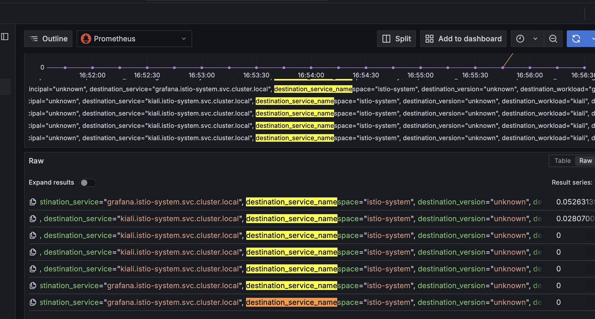
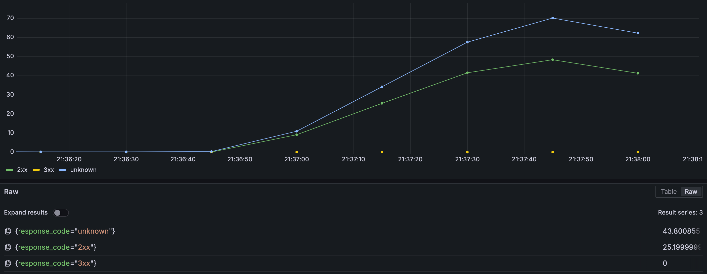

istio 遥测
Telemetry定义如何为网格内的工作负载生成遥测（指标、日志和跟踪）。
1、Telemetry API作用域、继承和覆盖
-
根配置命名空间
- istio-system 根配置命名空间的telemetry api资源提供了网格范围的默认行为。
-
普通命名空间
- 通过将新的 Telemetry 资源应用到（不带工作负载选择算符的）目标命名空间中， 可以针对网格范围的配置达成特定于命名空间的覆盖。命名空间配置中指定的所有字段都将完全覆盖 （根配置命名空间中的）父级配置中的字段。
-
工作负载
- 使用工作负载选择算符 将新的 Telemetry 资源应用到目标命名空间中，可以实现特定于工作负载的覆盖。
1.1、配置失效
- 工作负载
- 两个不同的 Telemetry 资源选择相同的工作负载是无效的。
- 命名空间
- 未指定 selector 时在一个命名空间中设定两个不同的 Telemetry 资源也是无效的。
- 根空间
- 在根配置命名空间中定义多个网格范围的 Telemetry API 资源是无效的。
2、指标
2.1、Telemetry API 自定义 Istio 指标
2.1.1、覆盖指标
2.1.1.1、删除标签
删除REQUEST_COUNT中的destination_service_name标签。
kubectl apply -f - <<EOF
apiVersion: telemetry.istio.io/v1
kind: Telemetry
metadata:
name: remove-tags
namespace: istio-system
spec:
metrics:
- providers:
- name: prometheus
overrides:
- match:
mode: CLIENT_AND_SERVER
metric: REQUEST_COUNT
tagOverrides:
destination_service_name:
operation: REMOVE
EOF
经测试，从prometheus中看到REQUEST_COUNT对应的标签已删除。 
{kind=link}
2.1.1.2、自定义标签
kubectl apply -f - <<EOF
apiVersion: telemetry.istio.io/v1
kind: Telemetry
metadata:
name: custom-tags
namespace: istio-system
spec:
metrics:
- overrides:
- match:
metric: REQUEST_COUNT
mode: CLIENT
tagOverrides:
destination_x:
value: upstream_peer.labels['app'].value
- match:
metric: REQUEST_COUNT
mode: SERVER
tagOverrides:
source_x:
value: downstream_peer.labels['app'].value
providers:
- name: prometheus
EOF
2.1.2、禁用指标
2.1.2.1、禁用所有指标
kubectl apply -f - <<EOF
apiVersion: telemetry.istio.io/v1
kind: Telemetry
metadata:
name: remove-all-metrics
namespace: istio-system
spec:
metrics:
- providers:
- name: prometheus
overrides:
- disabled: true
match:
mode: CLIENT_AND_SERVER
metric: ALL_METRICS
EOF
2.1.2.2、禁用REQUEST_COUNT指标
kubectl apply -f - <<EOF
apiVersion: telemetry.istio.io/v1
kind: Telemetry
metadata:
name: remove-request-count
namespace: istio-system
spec:
metrics:
- providers:
- name: prometheus
overrides:
- disabled: true
match:
mode: CLIENT_AND_SERVER
metric: REQUEST_COUNT
EOF
2.2、tcp指标
Istio自动收集网格中 TCP 服务的遥测数据。
istio_tcp_connections_opened_total指标或istio_tcp_connections_closed_total
2.3、自定义istio指标
默认情况下，Istio 会定义并生成一组标准指标（例如请求总数 “requests_total”），不过你也可以使用遥测应用程序编程接口（Telemetry API）对它们进行自定义并创建新的指标。
cat <<EOF > ./custom_metrics.yaml
apiVersion: telemetry.istio.io/v1
kind: Telemetry
metadata:
name: namespace-metrics
spec:
metrics:
- providers:
- name: prometheus
overrides:
- match:
metric: REQUEST_COUNT
tagOverrides:
destination_port:
value: "string(destination.port)"
request_host:
value: "request.host"
EOF
kubectl apply -f custom_metrics.yaml
2.4、指标分类
2.4.1、请求分类
apiVersion: extensions.istio.io/v1alpha1
kind: WasmPlugin
metadata:
name: istio-attributegen-filter
spec:
selector:
matchLabels:
app: reviews
url: https://storage.googleapis.com/istio-build/proxy/attributegen-359dcd3a19f109c50e97517fe6b1e2676e870c4d.wasm
imagePullPolicy: Always
phase: AUTHN
pluginConfig:
attributes:
- output_attribute: "istio_operationId"
match:
- value: "ListReviews"
condition: "request.url_path == '/reviews' && request.method == 'GET'"
- value: "GetReview"
condition: "request.url_path.matches('^/reviews/[[:alnum:]]*$') && request.method == 'GET'"
- value: "CreateReview"
condition: "request.url_path == '/reviews/' && request.method == 'POST'"
---
apiVersion: telemetry.istio.io/v1
kind: Telemetry
metadata:
name: custom-tags
spec:
metrics:
- overrides:
- match:
metric: REQUEST_COUNT
mode: CLIENT_AND_SERVER
tagOverrides:
request_operation:
value: istio_operationId
providers:
- name: prometheus
{kind=link}
2.4.2、响应分类
apiVersion: extensions.istio.io/v1alpha1
kind: WasmPlugin
metadata:
name: istio-attributegen-filter
spec:
selector:
matchLabels:
app: productpage
url: https://storage.googleapis.com/istio-build/proxy/attributegen-359dcd3a19f109c50e97517fe6b1e2676e870c4d.wasm
imagePullPolicy: Always
phase: AUTHN
pluginConfig:
attributes:
- output_attribute: istio_responseClass
match:
- value: 2xx
condition: response.code >= 200 && response.code <= 299
- value: 3xx
condition: response.code >= 300 && response.code <= 399
- value: "404"
condition: response.code == 404
- value: "429"
condition: response.code == 429
- value: "503"
condition: response.code == 503
- value: 5xx
condition: response.code >= 500 && response.code <= 599
- value: 4xx
condition: response.code >= 400 && response.code <= 499
---
apiVersion: telemetry.istio.io/v1
kind: Telemetry
metadata:
name: custom-tags
spec:
metrics:
- overrides:
- match:
metric: REQUEST_COUNT
mode: CLIENT_AND_SERVER
tagOverrides:
response_code:
value: istio_responseClass
providers:
- name: prometheus
{kind=link}
根据分类标签统计数据
{kind=link}
3、日志
3.1、loki采集日志
3.2、envoy开启访问日志
4、分布式跟踪
4.1、软件集成
skywalking、zipkin、jaeger参考，仅供参考。
4.2、配置跟踪
-
集成跟踪工具
-
配置发送跟踪
-
启用跟踪
4.3、跟踪采样
-
百分比采样器
- 全局范围配置通过MeshConfig
- Pod注释proxy.istio.io/config
- telemetry API
-
自定义 OpenTelemetry 采样器
本文阅读量 次